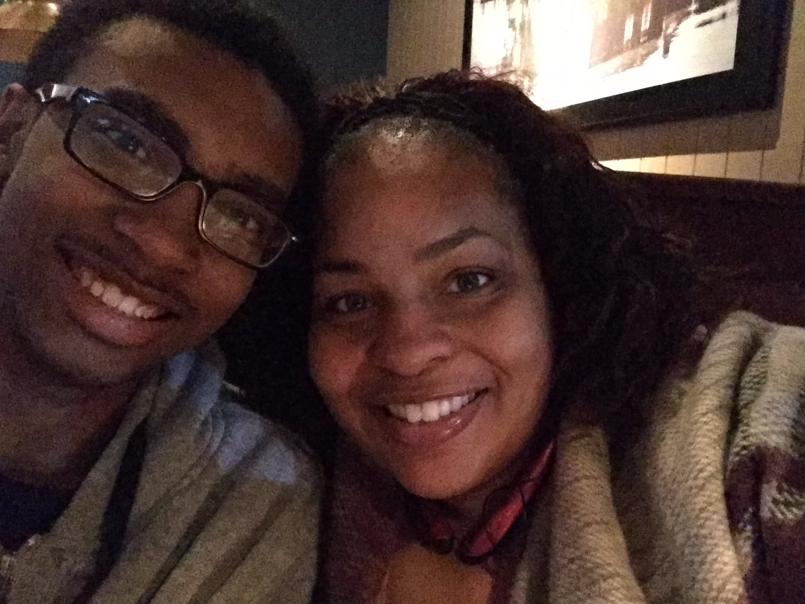

The name's Joshua. I'm just a moody 15 year old teen who wants to play video games all day. I want to become a video game programmer for Nintendo...or any exciting job with Nintendo. I'm about to be in the 10th grade attending Kenwood Academy High School. I want to learn the ins and outs of video games and how they work while enjoying playing them at the same time. Nintendo has been a part of my life ever since I was little so I really hope to find a job to work there someday. A side hobby that I want to do also is making gaming videos for Youtube. I don't know what else to put on here at the moment so I guess that's it for now.
"